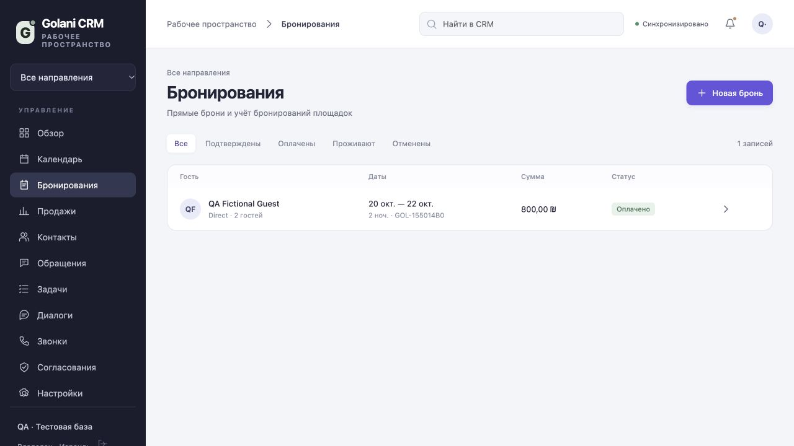

Pour MacBook
macOS 14 ou plus récent, sur Apple Silicon et Intel. Cette version native n’est pas notariée par Apple et macOS peut en bloquer l’ouverture.
Télécharger · ZIPGalany CRM · Entreprises en Israël
Quand un client rappelle, retrouvez sa demande, ce qui a été convenu et la prochaine action, depuis votre téléphone ou votre ordinateur.

Télécharger le CRM hors ligne · 1.0.0
Une application distincte pour les contacts, les affaires, les tâches et les rendez-vous. Elle fonctionne sans Galany CRM en ligne. Les données restent sur cet appareil, sans synchronisation entre les éditions.
macOS 14 ou plus récent, sur Apple Silicon et Intel. Cette version native n’est pas notariée par Apple et macOS peut en bloquer l’ouverture.
Télécharger · ZIPUn exécutable autonome avec une interface locale dans le navigateur. Le fichier ne porte pas de signature numérique Windows.
Télécharger · EXEDécompressez le ZIP et ouvrez index.html dans une fenêtre normale de Chrome ou Edge. Si le système bloque un exécutable, utilisez cette édition sans désactiver les protections.
Télécharger · ZIPLes contacts, affaires, tâches et réservations sont réunis dans le CRM en ligne. L’assistance textuelle et le module vocal y sont intégrés. La téléphonie client est en phase pilote : une ligne raccordée et des essais de réception sont nécessaires avant son activation.
Galany CRM
Un historique partagé des échanges, des affaires et des relances convenues.
Attribuez une tâche, suivez un rendez-vous et connectez un agenda compatible après vérification.
Préparez un résumé ou un brouillon depuis une boîte connectée. L’envoi nécessite une action autorisée.
Le responsable attribue les droits de chaque collaborateur.
Le CRM constitue la base. La vente et la gestion des appels sont deux modules intégrés, que vous pouvez déployer progressivement.
Quand un client rappelle, retrouvez sa demande, ce qui a été convenu et la prochaine action, depuis votre téléphone ou votre ordinateur.
DécouvrirVotre catalogue et vos règles de vente guident les réponses. Chaque échange se termine par une prochaine étape que l’équipe peut retrouver dans le CRM.
DécouvrirTraitez les demandes courantes avec un assistant vocal et confiez les exceptions à un conseiller qui retrouve le contexte dans le CRM.
DécouvrirNous testons les scénarios dans les langues de vos clients avec votre vocabulaire.
Le périmètre, le temps de communication et les services tiers sont convenus avant le lancement. Les prix s’entendent hors TVA.
Le CRM se consulte dans un navigateur sur téléphone ou ordinateur avec un compte autorisé.
Fuseau horaire, horaires d’ouverture, chabbat et jours fériés sont définis avec votre équipe.
Le périmètre est convenu selon vos processus et les connexions nécessaires.
Accueil et rendez-vous pour garages et concessions.
Demander une démoAccueil administratif des cabinets dentaires.
Demander une démoAppels entrants et prise de rendez-vous.
Demander une démoVente assistée par IA, CRM mobile, site et présence numérique.
Demander une démoLight et gestion des réservations avec les plateformes compatibles.
Demander une démoLight, intégrations complexes et ligne de service dédiée.
Demander une démoLes fonctions Business avec prise en charge de lignes supplémentaires.
Demander une démoChoisissez un cas réel sans communiquer de données personnelles.
Validez les canaux, les accès, les critères de réception et le coût.
Testez le catalogue, les langues et le transfert à un conseiller.
Validez les essais et les modalités de support avant le lancement.
La téléphonie, WhatsApp, Google Calendar, Booking.com et Airbnb nécessitent une connexion compatible, des autorisations et des essais. L’IA peut se tromper : faites vérifier les décisions importantes.
Non. Le CRM est accessible par navigateur après l’ouverture du compte.
Le module vocal est intégré. La ligne de votre entreprise est testée en pilote avant de recevoir les appels clients.
Galany CRM
Décrivez une demande type et la suite que votre équipe souhaite lui donner.
+972 55 507 14009881988@gmail.com1, rue Gush Etzion, Tibériade, Israël